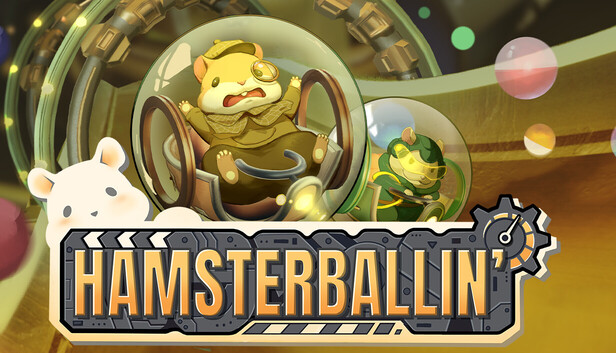

Hamsterballin'
Track 1 Level Design & Item Blueprint Scripting

项目速览
项目性质SMU Guildhall 团队项目
角色Track 1 关卡设计师
技术UE5 Blueprint
类型多人街机竞速
我的核心贡献
- 设计 Track 1 的路线、高差、坡面与竞速节奏。
- 用 UE5 Blueprint 快速制作陷阱原型并验证乐趣。
- 参与部分道具逻辑开发，其中部分进入最终版本。
项目概述
Hamsterballin' 是一款竞技街机竞速游戏。玩家控制装在仓鼠球中的角色，在不同主题的赛道上滚动、弹跳和竞速，并利用赛道路线、捷径与道具干扰对手。与传统卡丁车不同，仓鼠球本身的物理运动是路线判断和操作节奏的重要组成部分。
我的工作
- Track 1 赛道设计：负责 Track 1 的赛道设计，并围绕仓鼠球滚动和弹跳的移动方式组织赛道路线与竞速节奏。
- 道具 Blueprint：负责部分道具的 Blueprint 逻辑编写。
- 最终实装：我参与编写的部分道具进入了游戏的最终版本。
开发阶段验证
版本说明：以下 GIF 为开发阶段记录，并非最终实装版本；需等游戏正式上线后更新为最终版本内容。
Track 1 赛道片段
以下四段展示我负责的 Track 1 在开发阶段的实际跑图效果，用于检查高速移动中的路线辨识、坡面衔接、落点判断与整体竞速节奏。


UE5 Blueprint 陷阱原型
我在游戏初期直接使用 UE5 Blueprint 编写这四个陷阱原型，用较低成本快速验证陷阱与滚动竞速结合后能否产生清晰、可读且有趣的交互，再根据测试结果决定后续迭代方向。


设计关注点
赛道与球体物理
仓鼠球会持续滚动并通过坡面和碰撞产生弹跳，因此赛道需要让玩家提前读取弯道、边缘、落点和速度变化，而不能只依赖传统车辆的转向经验。
多人竞速可读性
竞速中同时存在多名玩家与道具效果。路线、障碍和捷径需要保持清晰，使玩家在高速移动和相互干扰时仍能快速判断前进方向。
游戏画面


以上静态图片来自游戏公开 Steam 页面；本页的 Track 1 与陷阱 GIF 为我的开发阶段记录，用于说明个人设计与原型验证工作。